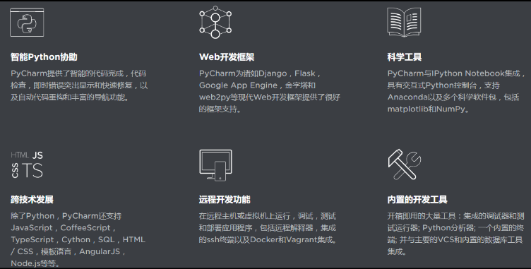
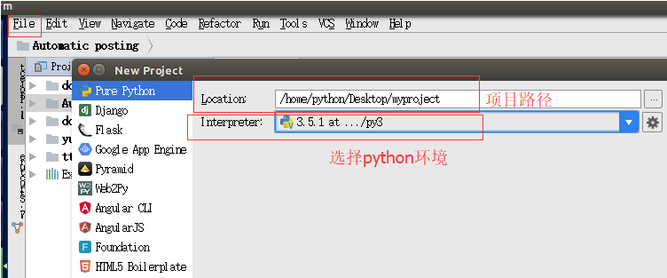
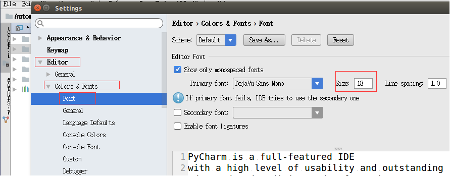
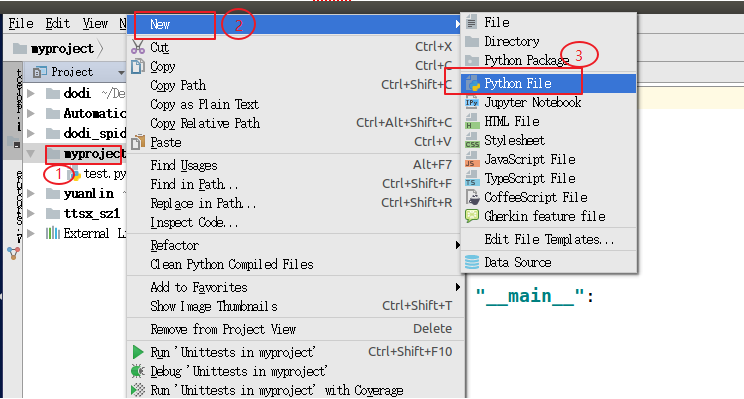

1.4Pycharm安装和使用
1、Pycharm是什么？
适用于专业开发人员的 Python IDE。
提高代码质量
编写整洁和可维护的代码，而IDE可以帮助您通过PEP8检查，测试帮助，智能重构和一系列检查来保持质量。
提供你所需要
PyCharm是程序员为程序员设计的，它提供了所有你需要的有效的Python开发工具。

2、Pycharm下载地址
官网地址：http://www.jetbrains.com/pycharm/?fromMenu
3、新建项目
file->New project->pure python->create

4、Pycharm 字体设置
file->settings->Editor->Colors&Fonts->Font-> Size 设置为18，Console Font Size 设置为18

5、新建py文件
项目->点鼠标右键->new->python file->输入文件名->点击ok
